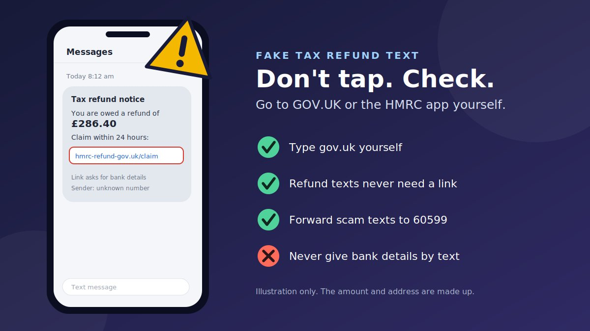

"You are owed a tax refund of £286.40. Claim within 24 hours." It is a small amount, a short deadline, and a link that looks vaguely official. If you pay tax in the UK, the idea that you might be owed some back is believable. That is exactly why fake HMRC refund texts are one of the most common scams people report.
How fake HMRC refund text scams work
This is phishing by text message, often called smishing. The text is cheap to send in bulk, and the message is designed to feel like good news.
- The bait. A text says HMRC has calculated that you are owed a refund, or that your rebate is pending.
- The pressure. There is a deadline, such as "within 24 hours," or a warning that the refund will expire.
- The link. The link opens a page that copies the look of a government site and asks for your name, address, date of birth, and card or bank details, sometimes followed by a code sent to your phone.
- The theft. The details go to the scammer, who uses them to take money, open accounts in your name, or call you pretending to be your bank.
The same scam on other channels
| Channel | What it often looks like | What the scammer wants |
|---|---|---|
| Text message | "You are owed a refund. Claim here" plus a link | Bank or card details, and a one-time code |
| A "tax rebate" message with a button or attachment | Your HMRC login or bank details | |
| Phone call or voicemail | A recorded voice or "officer" about tax owed or a refund | Payment, or your personal and bank details |
| Social media or messaging apps | A direct message offering to "help you claim" | Your details, or a fee for a service that is not needed |
The important detail: HMRC does send some texts
Many older guides say HMRC never sends refund texts at all. That is no longer the full picture. GOV.UK now publishes a list of genuine HMRC text messages, and it is updated often. What matters is not whether a text exists, but what it asks you to do.
| Text | Genuine HMRC text (per GOV.UK) | Scam pattern |
|---|---|---|
| Tax refund (P800) | May tell you a refund is due if HMRC has already written to you and had no reply. It will not ask for personal or financial information and will not provide links. | "Claim now" with a link, or a request for card details |
| Self Assessment refund | May confirm that a refund you requested is being processed and when to expect it. No requests for details and no links. | A refund you never requested, with a link |
| Other HMRC texts | Some, such as reminders or confirmations, may link to GOV.UK information or webchat, but never ask for personal or financial details. | Any text that asks for bank, card, or login details |
GOV.UK also says some customers may receive branded messages that show HM Revenue and Customs as the sender with the HMRC logo and verified sender information. Because sender names can still be faked on some devices, the safest test is the content: a refund text should never ask you to tap a link or hand over details. Check the current list on the GOV.UK page for genuine HMRC texts, because it changes.
Warning signs of a fake HMRC refund text
- It contains a link to "claim" a refund or "verify your identity."
- It asks for bank details, card numbers, a PIN, a password, or a code sent to your phone.
- It sets a short deadline, such as 24 hours, or says the refund will expire.
- You were not expecting a refund, and you have not requested one or received a letter.
- The web address is not on gov.uk, or "gov.uk" appears inside a longer address such as
gov-uk-refund.co.uk. - It comes from an ordinary mobile number or from a sender name that cannot be checked.
- The wording is vague or oddly worded, with a round or attractive amount.
- It threatens consequences, such as penalties or legal action, if you do not act now.
- A follow-up call says it is from your bank and asks you to move money to a "safe account."
How to check a suspicious link
The best check is not to tap it. If you want to understand a link, follow these steps without opening it.
- Find the domain. It is the part right after
https://and before the first single/. Inhttps://gov.uk.refund-claim.com/start, the real site isrefund-claim.com, not GOV.UK. - Read the ending first. A genuine government service uses an address that ends in
gov.uk. Words placed before a different ending do not turn that site into GOV.UK. - Watch for tricks: extra words ("refund," "claim," "tax"), hyphens, swapped letters, or endings such as
.co.uk,.comor.org.ukwith a government-sounding name. - Do not trust the padlock. https only means the connection is encrypted. Fake pages can have it too.
- Be wary of shortened links such as bit.ly, which hide the destination.
- Remember the bigger rule. Even a link that looks correct should not be in a refund text that asks for your details. Type the address yourself instead.
Try the link red-flag scanner
Paste a link you received. The tool reads the address only. It does not open the link, and nothing you paste leaves your browser.
Realistic examples
These are composite examples written to show the pattern. They are not reports about real people.
How to verify a tax refund message safely
You can check any "refund" message without touching the link in it.
- Do not tap, reply, or call any number in the message.
- Ask yourself: have I requested a refund, or received a letter from HMRC about one? If not, treat the message as suspicious.
- Go to HMRC yourself. Type
gov.ukinto your browser, or open the HMRC app, and sign in to your HMRC online account. Your account shows what HMRC holds for you. - Compare with GOV.UK's lists. Check the genuine text messages page and HMRC's list of genuine contacts.
- Use only contact details published on GOV.UK if you need to speak to HMRC. If a caller is pushing you, hang up and call back on a number you found yourself.
- Learn the real route to a refund. GOV.UK explains how to claim a refund if you are due one. It never involves a link in a message.
- Ask someone you trust, or your accountant, if you are still unsure.
Prevention tips
- Save the HMRC app or the GOV.UK address on your phone, so checking your account is quick and does not need a message.
- Never share your Government Gateway user ID, password, or one-time codes with anyone.
- Use a unique password for your HMRC account, and turn on extra security if offered.
- Be wary at busy tax times, such as around Self Assessment deadlines, when scammers expect you to be looking for HMRC messages.
- Do not reply to suspicious texts, even to say "stop," as that tells the sender your number is active.
- Block the number after you report the text.
- Tell family members, especially older relatives, that HMRC does not text people links to claim refunds.
- If a caller says they are from your bank, hang up and call back using the number on your card or by dialling 159.
How to report a suspicious HMRC text
Reporting helps HMRC and other agencies take scam sites and numbers down. It takes less than a minute.
- Forward the text to 60599. GOV.UK says to forward suspicious texts to 60599 (network charges apply), or to email phishing@hmrc.gov.uk, and then delete them.
- Forward it to 7726 as well, if you want to alert your mobile network to the scam number.
- Report scam emails by forwarding them to phishing@hmrc.gov.uk, and to report@phishing.gov.uk, the National Cyber Security Centre's reporting address.
- Report scam calls and other contact using the HMRC reporting page on GOV.UK.
- See the NCSC's page on reporting a scam text message for more detail.
What to do if you have been scammed
If you tapped the link or shared details, act quickly. This happens to careful people, and there is no need to feel embarrassed.
If you only tapped the link
- Close the page and do not enter anything.
- Report and delete the text as above.
- If you downloaded anything, run a security scan, and change your passwords if you are unsure what you typed.
If you entered bank or card details
- Call your bank immediately on the number on your card, or dial 159, and ask them to secure your accounts and cards.
- Do not move money to a "safe account" for anyone who calls you, however convincing they sound.
- Report the fraud to Report Fraud (formerly Action Fraud) on 0300 123 2040. In Scotland, you can also contact Police Scotland on 101.
- Check your accounts and credit report for activity you do not recognise.
If you shared your HMRC or Government Gateway login
- Change your password from the official GOV.UK sign-in page, which you reach by typing the address yourself.
- Report the contact to HMRC using the reporting page on GOV.UK, and check your online account for changes you do not recognise.
Be wary of anyone who contacts you afterwards offering to recover your money for a fee. That is a common second scam. If you need support after a scam, ask your bank and people you trust for help.
Conclusion
The fake HMRC refund text works because a refund sounds like good news, and because HMRC does send some real texts. The safe habit is simple. A refund message should never need you to tap a link or hand over bank details. Check your own HMRC account by typing gov.uk or using the HMRC app, forward the scam to 60599, and move on.
The same tricks appear in other scams. Read our guides on the fake digital identity verification link scam, the fake QR code verification scam, and the fake AI customer support chat scam. Our earlier guide on fake income tax refund messages covers India, so use the UK contacts above if you are in the UK.
Got a text you are unsure about? Paste it into our free checker for a quick first read.
Frequently asked questions
Does HMRC text you about a tax refund?
HMRC does send some genuine texts, including a text about a P800 tax refund if it has written to you and had no reply, and a text confirming a Self Assessment refund request. According to GOV.UK, those texts do not ask for personal or financial information and do not contain links. A text asking you to click a link to claim a refund is a scam.
How can I check if I am really owed a tax refund?
Type gov.uk into your browser yourself, or use the HMRC app, and sign in to your HMRC online account. Do not use a link from a text, email or call. GOV.UK also explains how to claim a genuine refund.
Where do I forward a scam HMRC text?
Forward it to 60599 (network charges apply) or email phishing@hmrc.gov.uk, then delete it. You can also forward scam texts to 7726 to alert your mobile network.
What if I clicked the link but did not enter anything?
Close the page, do not enter any details, report and delete the text, and check your accounts. If you downloaded anything, run a security scan. If you are unsure whether you typed anything, treat it as if you did and contact your bank.
What should I do if I gave my bank details to a fake HMRC text?
Call your bank straight away on the number on your card or by dialling 159, ask them to secure your accounts, and report the fraud to Report Fraud (formerly Action Fraud) at reportfraud.police.uk or on 0300 123 2040. In Scotland, you can also contact Police Scotland on 101.
Got a refund text you want checked?
Run it through the checker